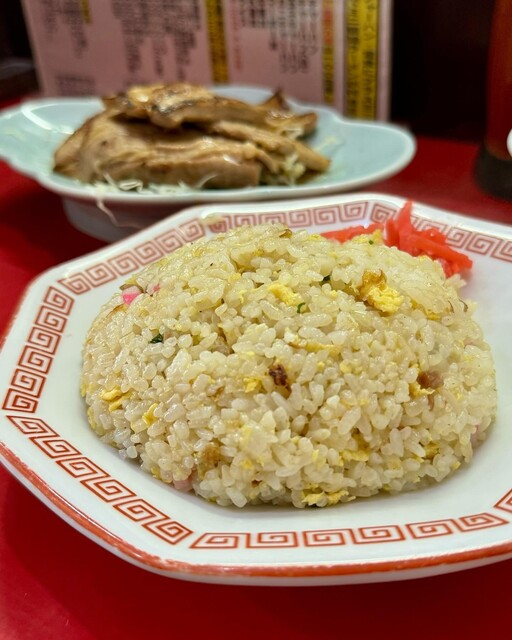

沼津駅南口の角地で愛される町中華。澄んだスープの中華そばに、パラパラのチャーハン、ジューシーな餃子。深夜までやっています。

カウンターとテーブルのこぢんまりとしたレトロな店内で、地元の人に長く親しまれてきました。深夜まで営業しています。
あっさり旨い、昔ながらの醤油の中華そば。
香ばしく炒めた、町中華のチャーハン。
沼津駅南口の角地。深夜まで営業しています。
レトロな店内で味わう、昭和の町中華。中華そばとチャーハン、餃子の黄金コンビは、地元の人が何度でも通う安心の味。エビチリや野菜炒めなど一品料理も充実しています。
駅から徒歩3分の好立地。深夜までやっているので、一杯のあとの〆にも。